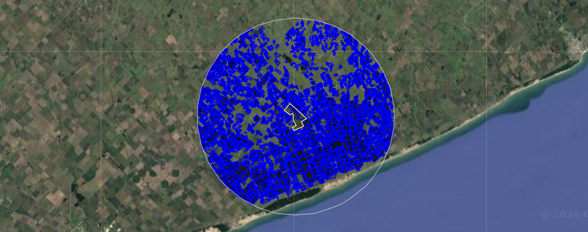
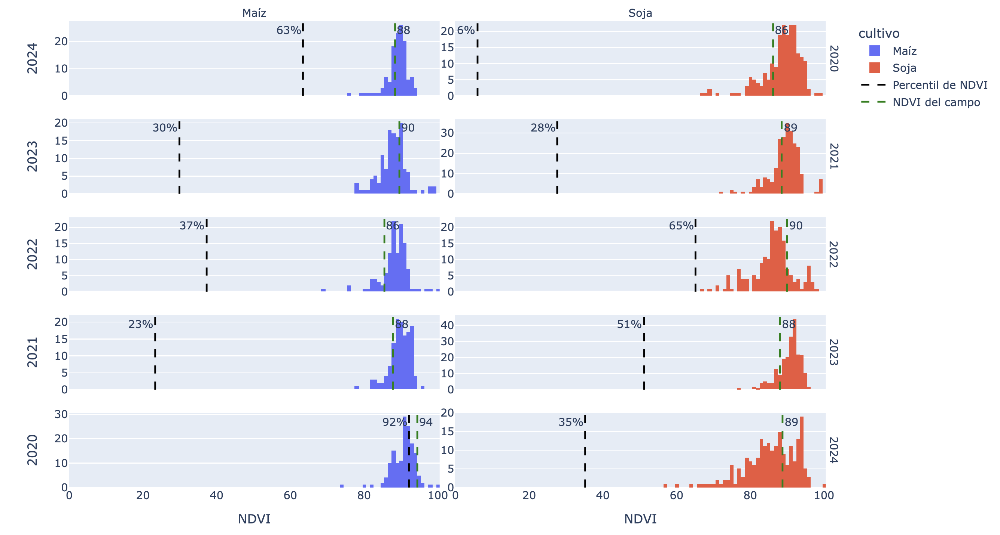

Más Allá de la Visita a Campo: Automatización de Benchmarking de Lotes para Decisiones de Arrendamiento
Resumen del Caso de Estudio
Industria: Tecnología Agropecuaria / Agricultura de Precisión
Métricas de Impacto:
- Análisis sistemático y reproducible de hasta 10 combinaciones cultivo-campaña por evaluación de campo
- Área de comparación con un radio de 20 km, incluyendo todos los lotes vecinos del mismo cultivo en la misma campaña
- El flujo de trabajo redujo un proceso de comparación no estructurado y costoso en tiempo a un pipeline consistente y reutilizable
- Resultados entregados como visualizaciones interpretables listas para respaldar negociaciones de arrendamiento sin requerir experiencia en GIS por parte del usuario final
Descripción General
Este proyecto entregó un flujo de trabajo automatizado de teledetección para respaldar decisiones de evaluación de tierras en arrendamiento. Usando imágenes satelitales Sentinel-2 y la API de Python de Google Earth Engine, el sistema compara el desempeño NDVI de un campo candidato contra lotes vecinos del mismo cultivo en la misma campaña, produciendo histogramas interpretables que contextualizan el campo dentro de su entorno agronómico local.
El Desafío
El equipo de arrendamiento de tierras de una empresa agrícola necesitaba una forma más estructurada de evaluar campos candidatos antes de comprometerse con un contrato. El riesgo comercial central era claro: arrendar un campo a un precio alto para luego descubrir que su desempeño productivo está por debajo del promedio local.
Antes de que existiera este flujo de trabajo, comparar un campo con su entorno dependía de análisis ad-hoc que eran lentos, inconsistentes entre evaluaciones y difíciles de replicar. No había un método estandarizado para responder una pregunta simple pero comercialmente significativa: ¿cómo rinde este campo en comparación con los lotes vecinos del mismo cultivo?
Los datos de verdad de campo, como mapas de rendimiento o registros de cultivos, frecuentemente no estaban disponibles al momento de la evaluación. Cualquier solución debía funcionar sin ellos.
Enfoque Técnico
Stack Tecnológico
- Imágenes Satelitales: Sentinel-2 (resolución espacial de 10 metros)
- Plataforma de Procesamiento: Google Earth Engine (API de Python)
- Lenguaje: Python
- Datos de Entrada: Capas de límites de campo (KMZ o Shapefile)
- Salida: Histogramas NDVI por campaña y cultivo
Metodología
El flujo de trabajo sigue una estructura analítica clara: clasificar tipos de cultivos, extraer valores NDVI a nivel de lote y comparar el campo objetivo contra una muestra representativa de lotes vecinos.
Arquitectura del Flujo de Trabajo
flowchart TD
A["📂 Field Boundary Input<br/>(KMZ / Shapefile)"] --> B["🛰️ Sentinel-2 Image Collection<br/>(5 most recent seasons)"]
B --> C["🌾 Unsupervised Crop Classification<br/>Maize · Soybean"]
C --> D["✂️ Negative Buffer<br/>15 m inward per lot"]
D --> E["📊 NDVI Extraction<br/>Median per lot · Peak in critical window"]
E --> F{{"Evaluated Field"}}
E --> G{{"Neighborhood<br/>(20 km radius)"}}
F --> H["🔗 Merge lots by crop + campaign<br/>Single representative value"]
G --> I["📐 Filter by same crop + campaign<br/>Percentile calculation"]
H --> J["📈 Histogram Output<br/>Field position vs. local distribution"]
I --> J
classDef proxy fill:#EED5CF,stroke:#B5C0C0,stroke-width:2px,color:#3A4040
classDef core fill:#DDEAF6,stroke:#B5C0C0,stroke-width:2px,color:#3A4040
classDef data fill:#D6CCFF,stroke:#B5C0C0,stroke-width:2px,color:#3A4040
classDef cache fill:#E7F5C5,stroke:#B5C0C0,stroke-width:2px,color:#3A4040
class A,B proxy
class C,D,E core
class F,G,H,I data
class J cache**Componentes clave**:
- **Clasificación**: Identificación no supervisada de cultivos aplicada de forma independiente por campaña
- **Buffer**: Buffer negativo de 15 metros aplicado a todas las geometrías de lotes para reducir el ruido de borde por píxeles mixtos
- **Métrica NDVI**: NDVI mediano dentro de cada lote; valor pico dentro de la ventana crítica de crecimiento del cultivo utilizado para la comparación
- **Vecindario**: Todos los lotes clasificados como el mismo cultivo dentro de un radio de 20 km alrededor del campo evaluado
- **Agregación**: Para el campo evaluado, todos los lotes del mismo cultivo en una campaña se unifican en una sola geometría para producir un valor representativo por combinación cultivo-campaña
Detalles de Implementación
Paso 1 — Ingesta de datos y preparación de lotes
El flujo de trabajo acepta una capa de límites de campo (KMZ o Shapefile) como único dato de entrada manual. Una vez cargado, cada lote dentro del campo se procesa de forma independiente. Se aplica un buffer negativo de 15 metros a todas las geometrías antes de cualquier extracción de píxeles, para reducir la contaminación por efectos de borde, especialmente relevante en lotes más pequeños donde el ruido marginal puede distorsionar significativamente la señal NDVI.
Paso 2 — Clasificación de cultivos
Se aplica una clasificación no supervisada para identificar lotes de maíz y soja, tanto en el campo evaluado como en el área circundante. La clasificación se ejecuta de forma independiente por campaña a lo largo de las cinco temporadas agrícolas más recientes disponibles al momento de la evaluación.
Una limitación relevante en este paso es la distinción entre ciclos de maíz temprano y tardío. Como estos difieren en su momento relativo a la ventana crítica de NDVI, pueden introducir ruido si se tratan como una sola clase. El flujo de trabajo actual no los diferencia, y los resultados para maíz deben interpretarse teniendo esto en cuenta.

Paso 3 — Extracción y agregación de NDVI
Para cada lote clasificado como maíz o soja, se calcula el NDVI mediano dentro de la geometría del lote y se retiene el valor pico dentro del período crítico del cultivo como métrica representativa. Para el campo evaluado, todos los lotes del mismo cultivo en una campaña se fusionan en una sola geometría, y se deriva un único valor pico de NDVI.
Paso 4 — Comparación con el vecindario y resultados
Se recopilan los lotes vecinos clasificados como el mismo cultivo en la misma campaña, y sus valores pico de NDVI conforman la distribución de referencia. El valor del campo evaluado se ubica dentro de esa distribución y se calcula su posición percentil. La salida es un histograma por combinación cultivo-campaña, que muestra la distribución de frecuencia NDVI local con la posición del campo evaluado marcada como una línea vertical.

Nota: El valor NDVI que se muestra en los resultados está multiplicado por 100 (es decir, expresado como porcentaje) para reducir el tamaño de almacenamiento del raster resultante.
Resultados e Impacto
El flujo de trabajo no transformó la forma en que se toman las decisiones sobre tierras. Hizo una parte específica del proceso más rápida, más consistente y menos dependiente del juicio individual aplicado sin contexto.
Resultados clave:
- Benchmarking sistemático: Cualquier campo puede ahora evaluarse contra su contexto agronómico local de forma repetible, independientemente de quién realice el análisis o cuándo.
- Mayor cobertura temporal: Comparar el desempeño a lo largo de cinco campañas agrícolas reduce el efecto de cualquier año anómalo en la evaluación.
- Respaldo en negociaciones: Ubicar el percentil NDVI de un campo dentro de su distribución local le da al equipo de arrendamiento un punto de referencia concreto y respaldado por datos para las conversaciones de precio.
- Eficiencia operativa: Lo que antes requería análisis espacial no estructurado y costoso en tiempo ahora es manejado por un pipeline automatizado que produce resultados listos para usar.
Limitaciones honestas
El flujo de trabajo funciona bien para maíz y soja en condiciones típicas, pero la clasificación de cultivos no es perfecta. Los resultados deben leerse como evidencia de apoyo junto con visitas a campo y criterio agronómico, no como criterio de decisión independiente. La ambigüedad entre maíz temprano y tardío sigue siendo una fuente de ruido en el paso de clasificación que la implementación actual no resuelve completamente.
Mis Contribuciones
- Definición del problema: Traducir el proceso de evaluación del equipo de arrendamiento en un flujo de trabajo de teledetección tratable con entradas, salidas y lógica de comparación claramente definidas.
- Diseño de arquitectura: Estructurar el pipeline en torno al análisis a nivel de lote, la clasificación no supervisada y un marco de comparación basado en percentiles.
- Implementación técnica: Desarrollo completo en Python usando la API de Python de Google Earth Engine, incluyendo filtrado de colecciones de imágenes, clasificación de cultivos, lógica de buffer, extracción de NDVI, ensamblado del vecindario y generación de histogramas.
- Diseño de resultados: Definir el formato del histograma y la codificación visual de la posición percentil del campo para que los resultados sean directamente interpretables por actores no técnicos del equipo de arrendamiento.
- Documentación de limitaciones: Identificar y comunicar las restricciones de clasificación, particularmente en torno al maíz temprano vs. tardío, para que los usuarios finales pudieran interpretar los resultados con el nivel de confianza adecuado.
-
¿La teledetección forma parte de tu proceso de toma de decisiones?
Si trabajás en evaluación de tierras, monitoreo de cultivos o datos agrícolas y querés convertir imágenes satelitales en inteligencia de negocio accionable, hablemos. Ofrezco una sesión gratuita de 30 minutos para explorar si este tipo de flujo de trabajo se adapta a tu operación.